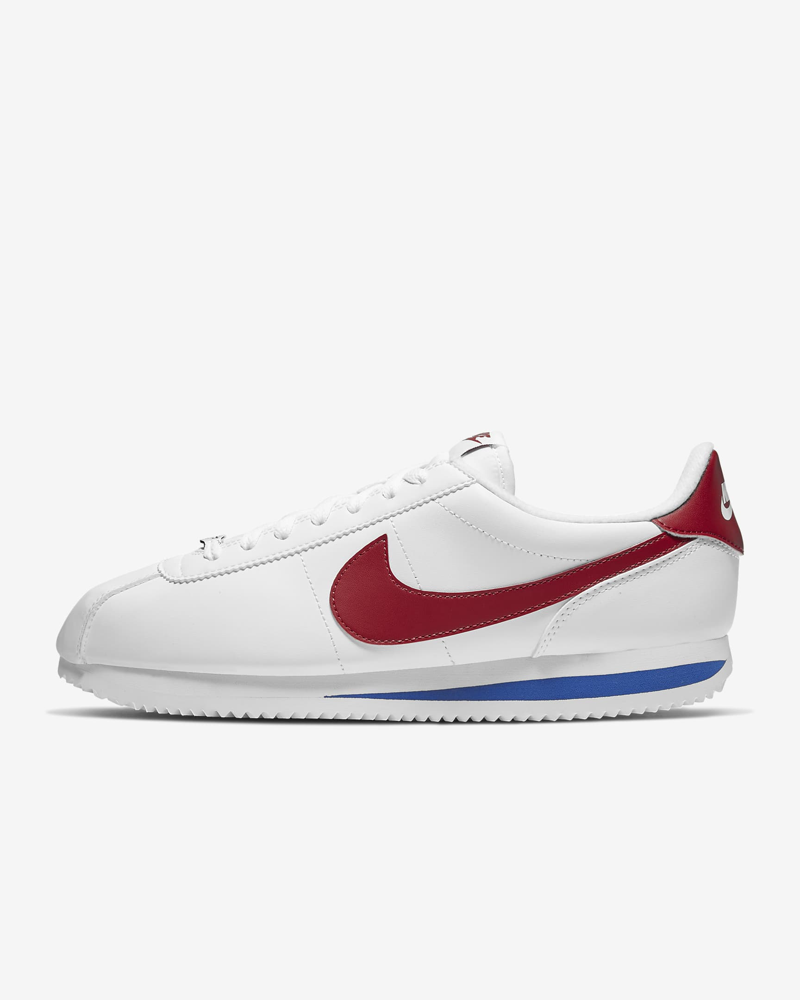
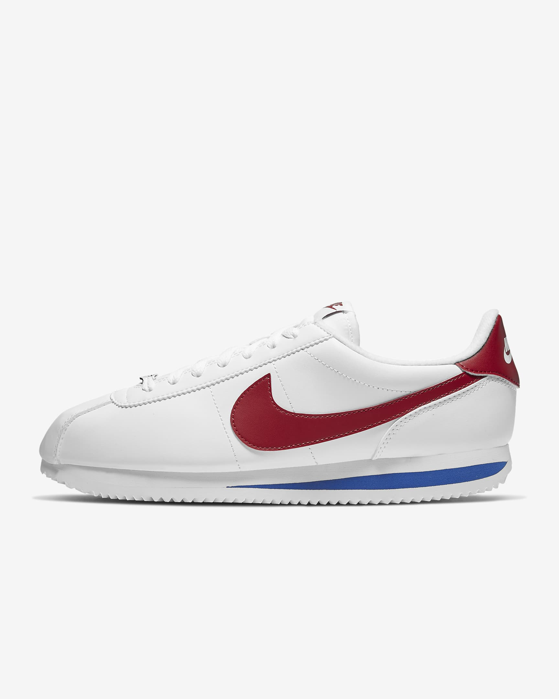
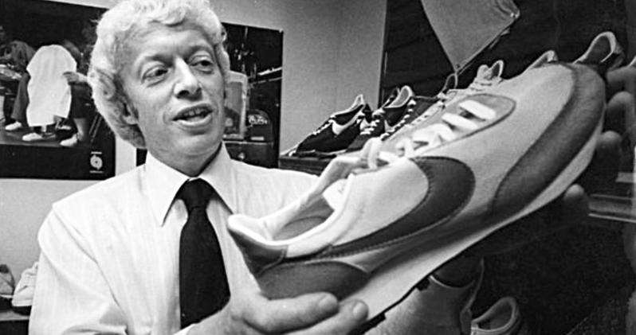
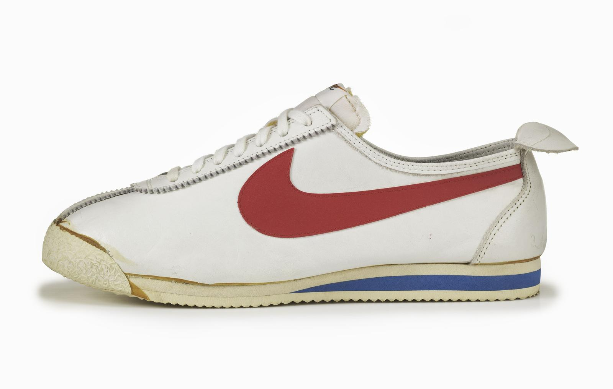

about Nike

Nike, founded in 1964 in Eugene,OR has truly expanded over the years. Nike is now a multinational corp. Yes, you heard it correctly.. MULTINATIONAL! Phil, pictured above created Nike along with his coach, Bill Bowerman(below)

The Cortez

The Cortez was the first stable, comfortable shoe for the roads. It looked cool and debuted as running emerged as an American pastime, popularized by Bowerman and his 1967 book “Jogging.”